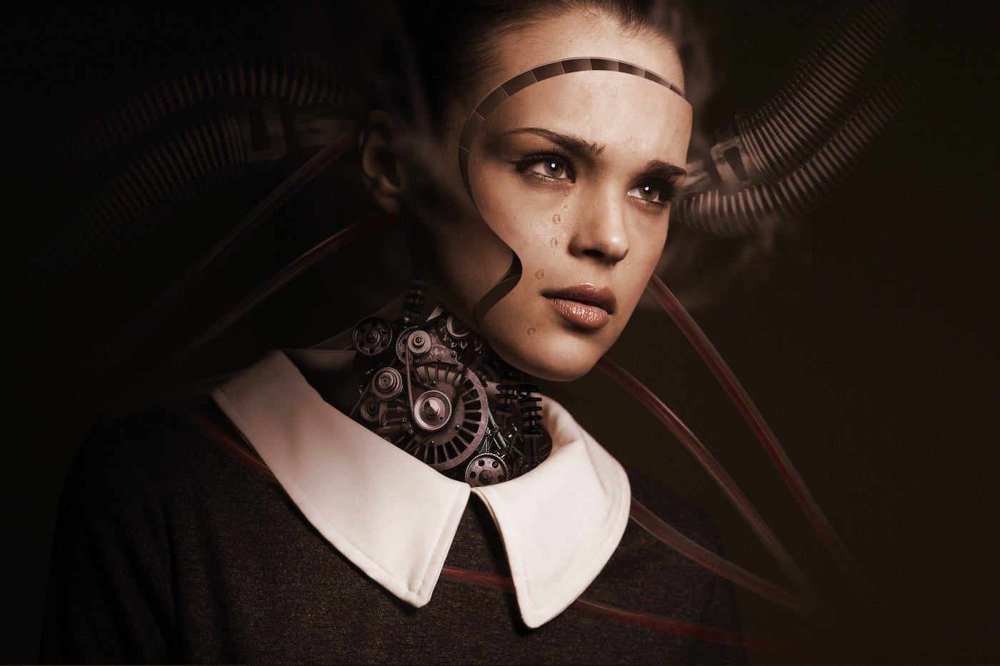

Изкуственият интелект измина дълъг път през последното десетилетие. В нашето ежедневие „умните“ машини са вече навсякъде – смартфони, автономни автомобили, виртуални асистенти, чатботове, хирургически роботи и т.н. Откакто AI се превърна в мейнстрийм технология, все повече инерция започна да набира дебатът – човек срещу машина.
Той е породен от опасението, че роботите ще станат достатъчно умни, за да ни заменят. Макар това да е възможно развитие на събитията, подобен апокалипсис е далеч от реалността, в която живеем. На този етап AI е достатъчно развит, за да се учи от грешките си и да взима интелигентни решения, но все още е силно зависим от някои човешки качества. За какво точно говоря?Дори най-развитите изкуствени интелекти, които познаваме (DeepMind, GPT-3 и др.), бледнеят пред IQ-то на едно бебе в директно сравнение. Точно затова имаме различни критерии за оценяване на двата вида интелект. Не е нужно обаче да провеждаме сложни лабораторни тестове, за да определим разликите между тях.
Хората взаимодействат с реалността благодарение на „театъра“ на ума. Ние дефинираме съществуването си с времето, мястото и усещането си за света около нас. Това е капризен начин да кажем, че имаме въображение. Нашият допир с реалността е базата, според която определяме интелекта си. За компютрите интелектът се измерва в експоненциално разгръщане на единици и нули. Чрез обратно инженерство можем да разбием до тези стойности всеки съществуващ AI, дори квантовите алгоритми. Това е така, защото ние сме проектантите им. Това кратко обяснение не разкрива на какво е способен изкуственият интелект. Може да се окаже, че човечеството е на едно-две големи открития от създаване на осъзната машина, която е способна да си представя неща и да формира собствен „театър“ на ума. Към момента не съществува AI, който може да мисли, а най-близкото до подобно откритие е тази идея за изкуствен поток на съзнание.
Изкуственият интелект не може да извършва чак толкова много дейности към момента, но се справя изключително добре с тези, които владее. Той ни превъзхожда в задачи, които сами по себе си не са сложни, но биха отнели твърде много време за изпълнение. За никой от нас не би било възможно да прегледа милиард изображения, за да определим в кои от тях има котки. Макар че ще се справим с по-голяма точност със задачата, житейският ни път е твърде кратък, за да я изпълним. Изкуственият интелект ще е готов за секунди. Когато чуете, че има AI, който може да открива ракови заболявания с 97% точност, това означава, че той е бил проектиран да сканира пиксели и да открива дадени образи в тях.
Това е така нареченото „дълбочинно проучване“, но съществуват много други форми на изкуствен интелект. Учените се опитват да имитират човешкия мозък чрез усъвършенствани невронни мрежи и хибридни технологии за машинно обучение. Само че ние самите не сме наясно с всичко, на което са способни мозъците ни. Това само доказва колко сме далеч от това да ги пресъздадем. Има да бъде извървян дълъг път, преди пропастта между хората и машините да бъде смалена. А дотогава просто няма база за сравнение, когато говорим за човешки и изкуствен интелект.